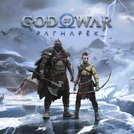

God of War Ragnarök es un juego de acción y aventura desarrollado por Santa Monica Studio y publicado por Sony Interactive Entertainment en 2022. Es la secuela de God of War (2018) y continúa la historia de Kratos y su hijo Atreus mientras enfrentan eventos del fin del mundo nórdico, conocido como Ragnarök. El juego combina combates estratégicos con armas y habilidades únicas, exploración de vastos escenarios mitológicos, resolución de acertijos y desarrollo profundo de los personajes a través de la narrativa y la relación padre-hijo.
Santa Monica Studio es el equipo responsable del desarrollo, utilizando el motor interno del estudio para ofrecer gráficos impresionantes, animaciones fluidas y un rendimiento optimizado en consolas PlayStation. El estudio ha cuidado cada detalle de la historia, la ambientación y la jugabilidad para ofrecer una experiencia inmersiva y cinematográfica.
Las actualizaciones recientes del juego han incluido mejoras de rendimiento y estabilidad, ajustes en la dificultad y corrección de errores menores. Además, se han añadido contenidos adicionales como trajes, armas y modos de juego que amplían la experiencia principal, manteniendo el título atractivo para nuevos jugadores y veteranos de la saga.